Cómo tomar pedidos, cobrar, manejar la caja y mantener la carta al día. Pensado para el dueño y el encargado del local.
Versión 1 · septiembre 2026 · Soporte: DelgadoDev
Antes de empezar
El sistema tiene dos partes:
La web del local: lo que ven los clientes. Ahí miran la carta y hacen su pedido desde el celular.
El panel: lo que usás vos. Se entra agregando /panel a la dirección de la web (por ejemplo silverio-club.vercel.app/panel).
💡 Usá una compu o una tablet para el servicioEn una pantalla grande ves todas las columnas de pedidos juntas. El celular sirve de respaldo, pero con muchos pedidos se vuelve incómodo.
Qué hay en este manual
Entrar al panel y tu contraseña
Un día de trabajo, paso a paso
Pedidos: el tablero
Cobrar y entregar
Cargar un pedido a mano
Delivery
La caja
Resumen y ventas
La carta: productos, precios y fotos
Promos y banner de fecha especial
QR de la carta
Configuración
Lo que ve el cliente
Problemas comunes
Quién puede hacer qué
Rol
Puede
Dueño
Todo: pedidos, caja, ventas, carta, promos, QR y configuración.
Encargado
Todo menos la configuración del local.
Mozo
Ver pedidos, cargar pedidos a mano y manejar los que cargó él.
1. Entrar al panel y tu contraseña
Abrí la dirección del panel.
Escribí tu email y tu contraseña. El ojito muestra lo que escribís.
Tocá Entrar.
🔒 5 intentos fallidosSi le errás 5 veces a la contraseña, el panel se bloquea 10 minutos por seguridad. Podés esperar o tocar Recuperar contraseña.
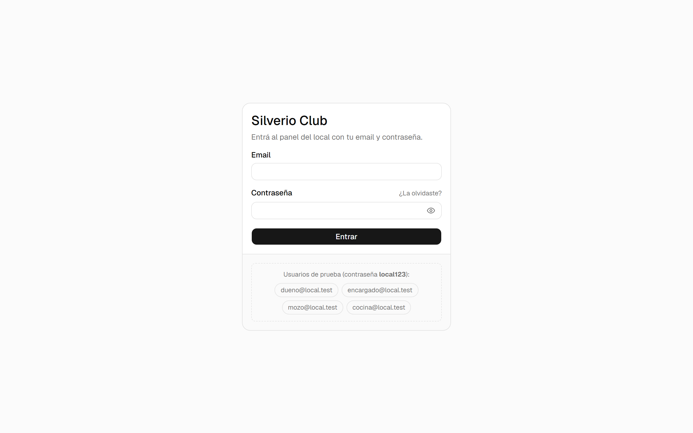
Pantalla para entrar.
Me olvidé la contraseña
En la pantalla de entrada tocá ¿La olvidaste?.
Escribí tu email y tocá Enviarme el link.
Abrí el mail (mirá también en spam), tocá el link y elegí una contraseña nueva.
Cambiar la contraseña
Entrá a Mi cuenta (menú de la izquierda). Escribí la contraseña actual, la nueva dos veces (mínimo 8 caracteres) y tocá Cambiar contraseña.
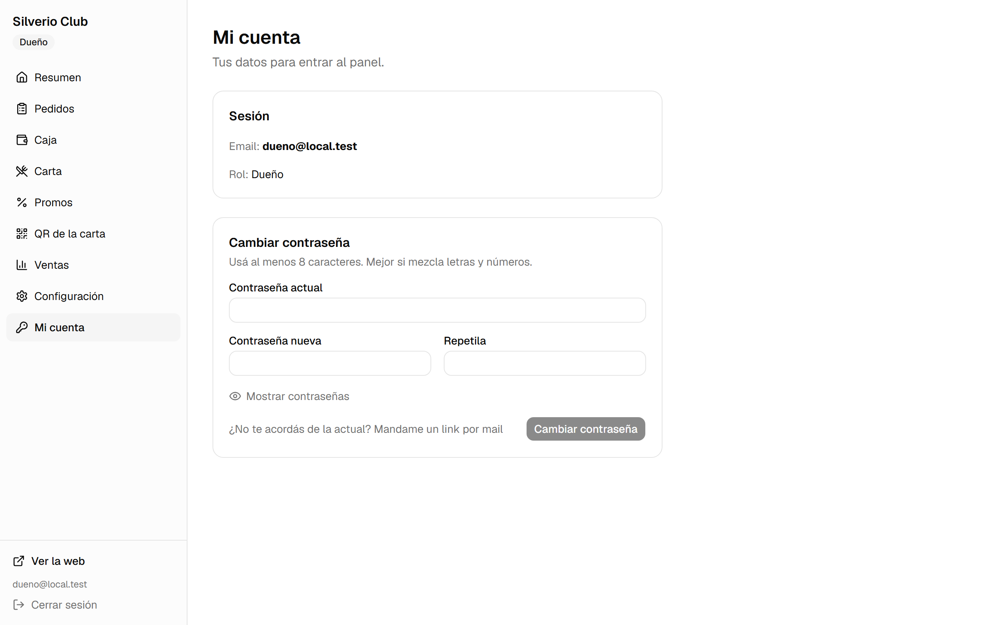
Mi cuenta: tus datos y el cambio de contraseña.
2. Un día de trabajo, paso a paso
Abrí la caja con el efectivo del cambio (Caja → Abrir caja).
Entrá a Pedidos y tocá Activar sonido de pedidos. Así suena cada vez que entra uno.
Cuando entra un pedido, tocá Aceptar: el cliente ve que lo estás preparando.
Cuando está listo, tocá Marcar listo. El cliente lo ve en su celular.
Al entregarlo, tocá Cobrar y entregar y marcá cómo pagó.
Si pagás algo en efectivo (pan, gas, un retiro), anotalo en Caja → Movimientos.
Al terminar, cerrá la caja: contás la plata y el sistema te dice si falta o sobra.
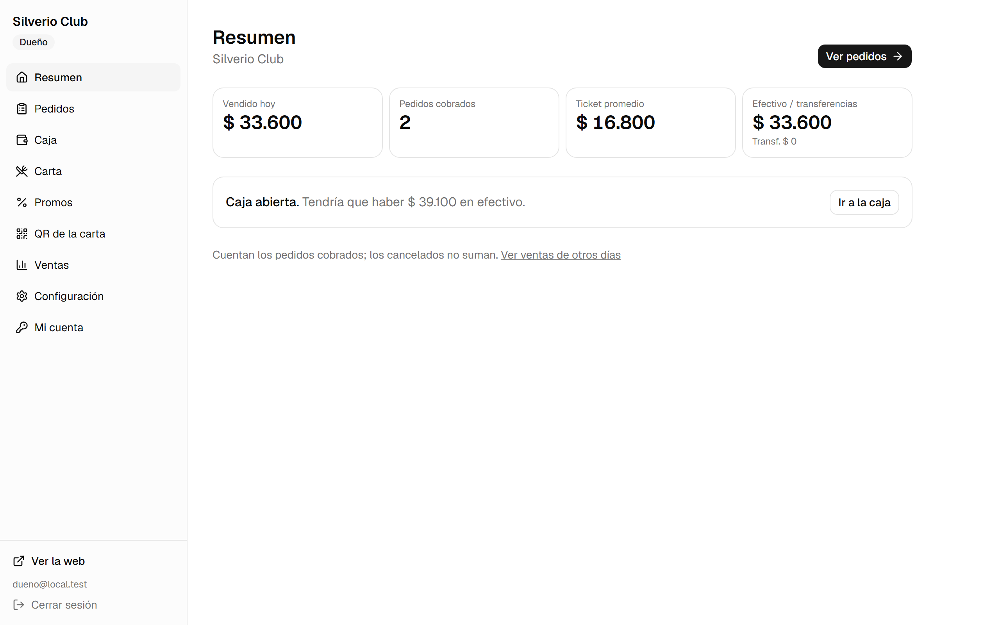
Resumen: lo que vendiste hoy y el estado de la caja, apenas entrás.
3. Pedidos: el tablero
Todos los pedidos del día aparecen solos, sin recargar la página. Cada columna es una etapa y tiene su color:
NuevosRecién entraron. Hay que aceptarlos.
En preparaciónLos estás haciendo.
ListosEsperan que los retiren o que salgan.
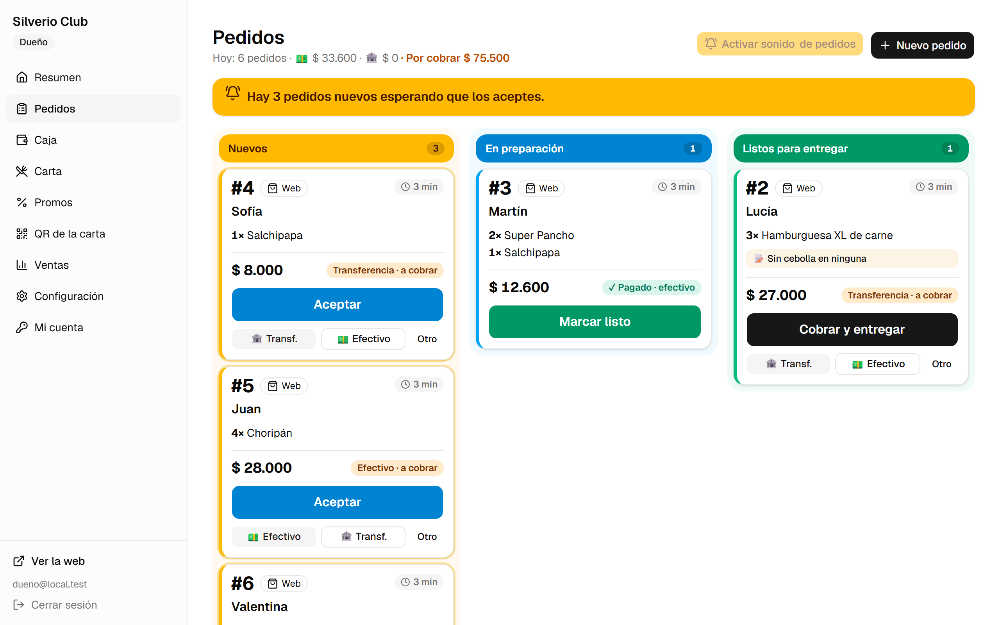
El tablero de pedidos. El botón grande de cada tarjeta lleva el pedido a la etapa siguiente.
Cómo leer una tarjeta
#4: número del pedido del día. Es el que le decís al cliente.
Web / Mostrador / Teléfono: de dónde vino.
🕐 minutos: hace cuánto entró. Se pone en rojo si un pedido nuevo espera más de 5 minutos o si se pasó la demora.
Lo que pidió, con las notas resaltadas (“sin cebolla”).
El total y cómo va a pagar: Efectivo · a cobrar, Transferencia · a cobrar o ✓ Pagado.
🔔 Si no suenaLos navegadores no dejan sonar nada hasta que tocás la pantalla. Cada vez que abras el panel, tocá Activar sonido de pedidos (el botón amarillo que titila).
3. Pedidos: el detalle
Tocá cualquier tarjeta para ver todo el pedido:
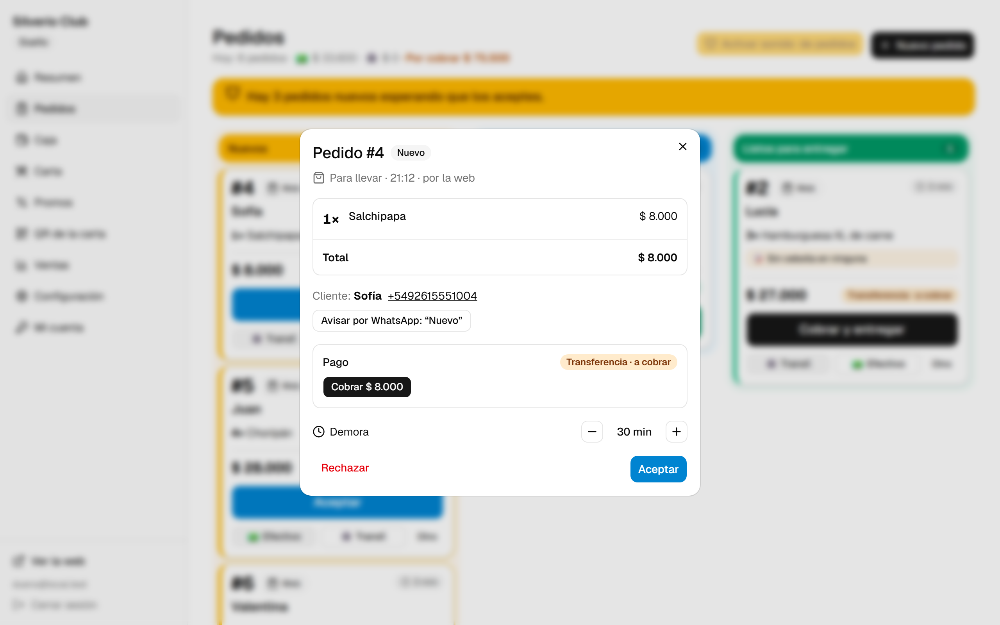
Detalle del pedido.
Avisar por WhatsApp: abre WhatsApp con un mensaje ya escrito para el cliente (“Tu pedido #12 está listo para retirar 🙌”).
Demora: con − y + la cambiás de a 5 minutos. El cliente la ve en su celular.
Rechazar / Cancelar pedido: te pide el motivo (“Nos quedamos sin stock”), y el cliente lo ve.
4. Cobrar y entregar
Hay tres formas de cobrar. Usá la que te quede más cómoda:
Cómo
Cuándo conviene
💵 Efectivo o 🏦 Transf. en la tarjeta
Cobra el total en un toque. Abajo aparece Deshacer por si te equivocaste.
Otro en la tarjeta
Para cobrar una parte, o para calcular el vuelto.
Cobrar y entregar
Al entregar un pedido que no estaba pagado. Te pregunta cómo pagó.
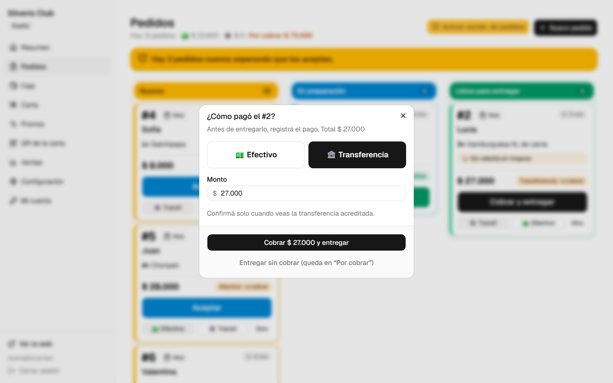
Al entregar un pedido sin cobrar, el sistema te pregunta cómo pagó.
Entregar sin cobrarSi le fiás o paga después, tocá Entregar sin cobrar. El pedido queda marcado en rojo: “Entregado sin cobrar”. Lo encontrás abajo en Entregados y cancelados de hoy y lo podés cobrar cuando pague.
TransferenciasMarcala como cobrada solo cuando veas la plata acreditada en la app del banco.
5. Cargar un pedido a mano
Para lo que te piden en el mostrador o por teléfono. Tocá + Nuevo pedido:
Tocá los productos para sumarlos (usá el buscador si hay muchos). Los que tienen variantes o extras te dejan elegir.
Ajustá las cantidades con − y +.
Elegí si es para llevar o para comer acá, y si vino por mostrador o por teléfono.
Nombre y WhatsApp son opcionales.
Si ya pagó, marcá Ya pagó y el medio. Tocá Cargar pedido.
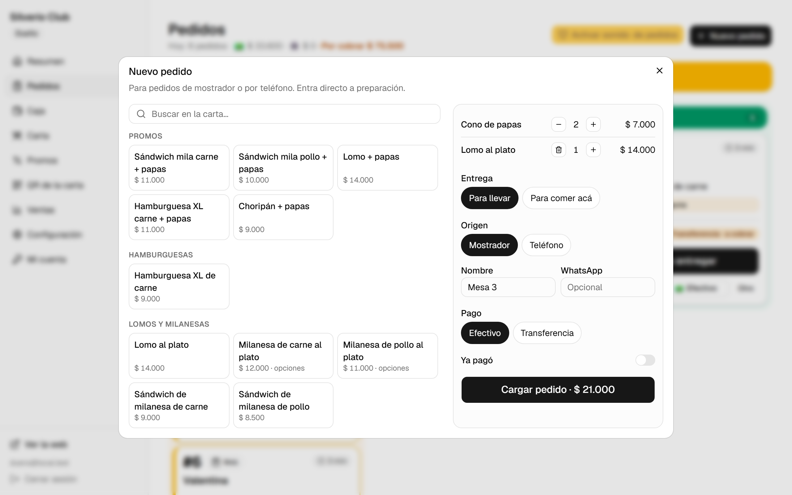
Pedido de mostrador. Entra directo a “En preparación”.
6. Delivery
El delivery se prende en Configuración → Formas de entrega. Cuando está prendido:
El cliente elige Delivery y deja su dirección. La web le avisa que le vas a confirmar el envío por WhatsApp.
En el tablero, la tarjeta muestra la dirección y el aviso Envío a confirmar.
Escribile al cliente por WhatsApp: si llegás a su zona y cuánto sale el envío.
En el detalle del pedido, cargá el costo del envío y tocá Guardar envío. Se suma al total y el cliente lo ve en su celular.
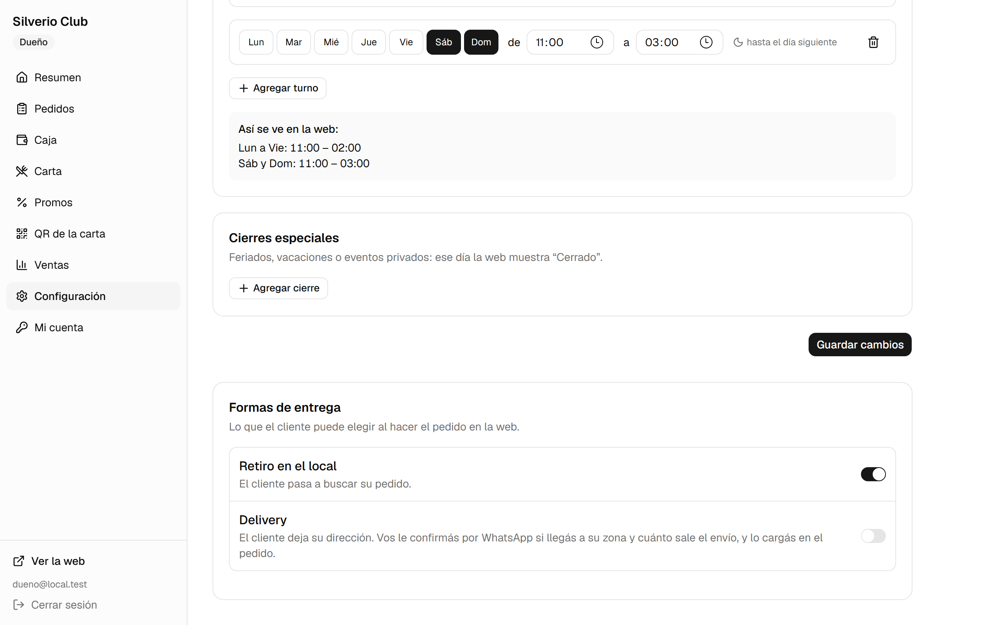
Configuración → Formas de entrega.
7. La caja
Abrir la caja
Al empezar el día, entrá a Caja, poné con cuánto efectivo arrancás (el cambio) y tocá Abrir caja. Desde ahí, cada cobro se suma solo.
Si te olvidás de abrirlaEn Pedidos aparece el aviso “La caja está cerrada”. Los cobros se registran igual en las ventas, pero no suman a ninguna caja.
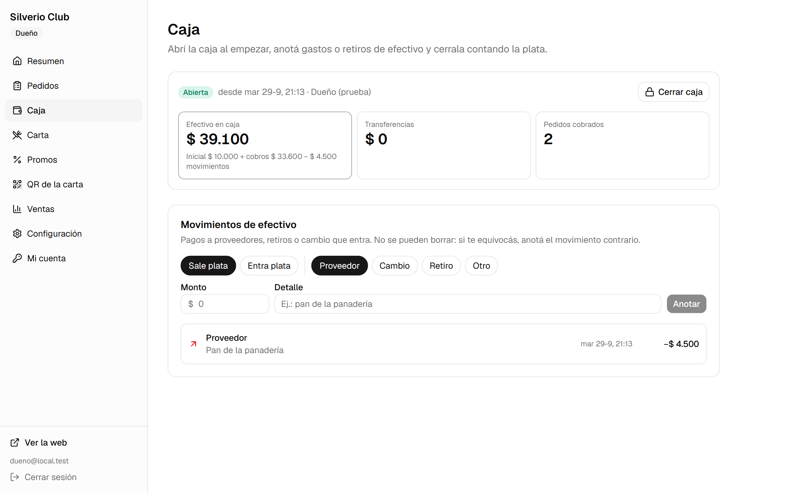
Caja abierta: cuánto efectivo tendría que haber, las transferencias y los movimientos.
Movimientos de efectivo
Si sale plata de la caja (pagás al proveedor, retirás) o entra (te traen cambio), anotalo: elegí Sale plata o Entra plata, el tipo, el monto y un detalle. Los movimientos no se borran: si te equivocás, anotá uno al revés.
7. La caja: cerrar
Tocá Cerrar caja.
Contá el efectivo y escribilo. El sistema te dice al instante “Da justo”, “Faltan $…” o “Sobran $…”.
Revisá las transferencias contra la app del banco.
Si hace falta, dejá una nota y tocá Cerrar caja.
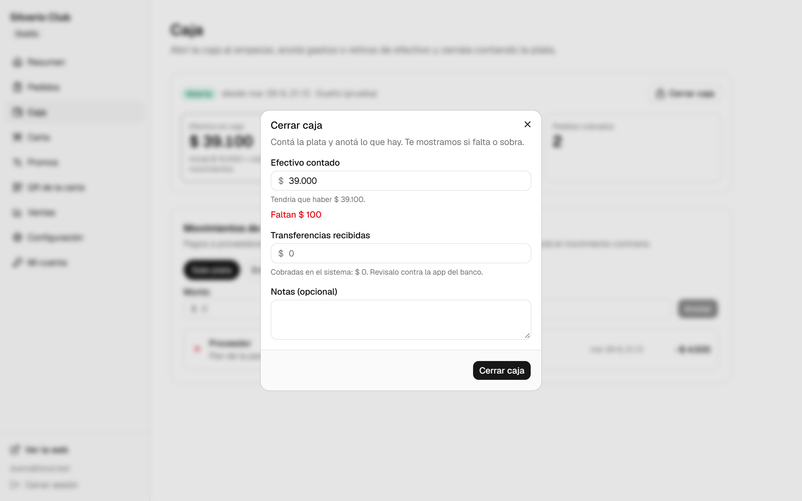
Cierre de caja: lo que tendría que haber contra lo que contaste.
Debajo de la caja queda el historial de cierres: cuándo se cerró, quién la cerró y cuánto faltó o sobró.
8. Resumen y ventas
Resumen (la primera pantalla) muestra lo vendido hoy, la cantidad de pedidos, el ticket promedio y el estado de la caja.
Ventas muestra:
Hoy comparado con el mismo día de la semana pasada (▲ o ▼ en %).
Lo vendido en los últimos 7 o 30 días, día por día.
Lo más vendido y los horarios con más pedidos.
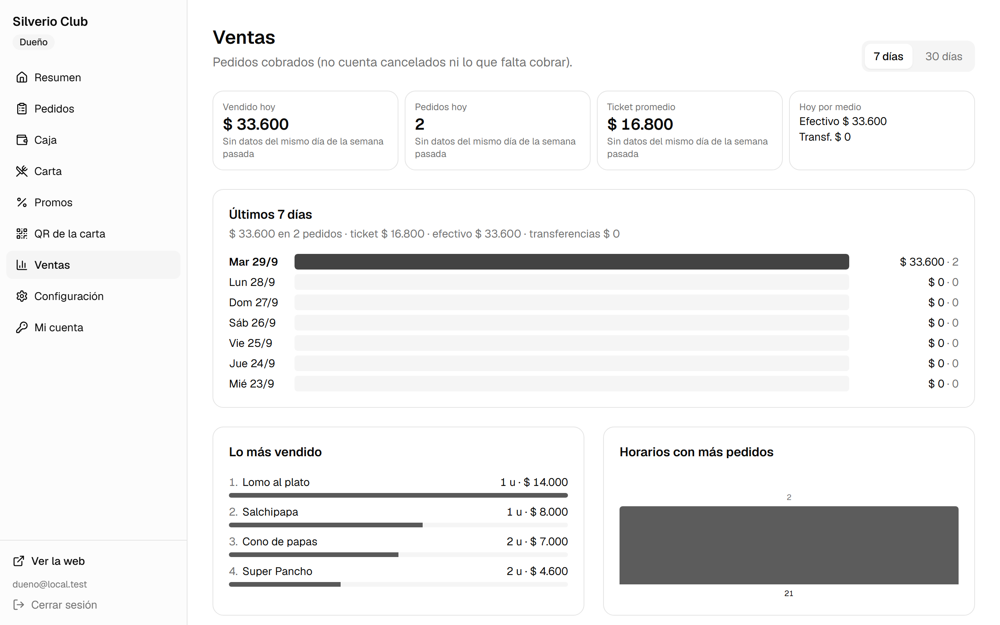
Ventas. Cuentan solo los pedidos cobrados; los cancelados no suman.
9. La carta: productos, precios y fotos
En Carta están todos tus productos agrupados por categoría. Lo que guardás se ve en la web a los pocos segundos.
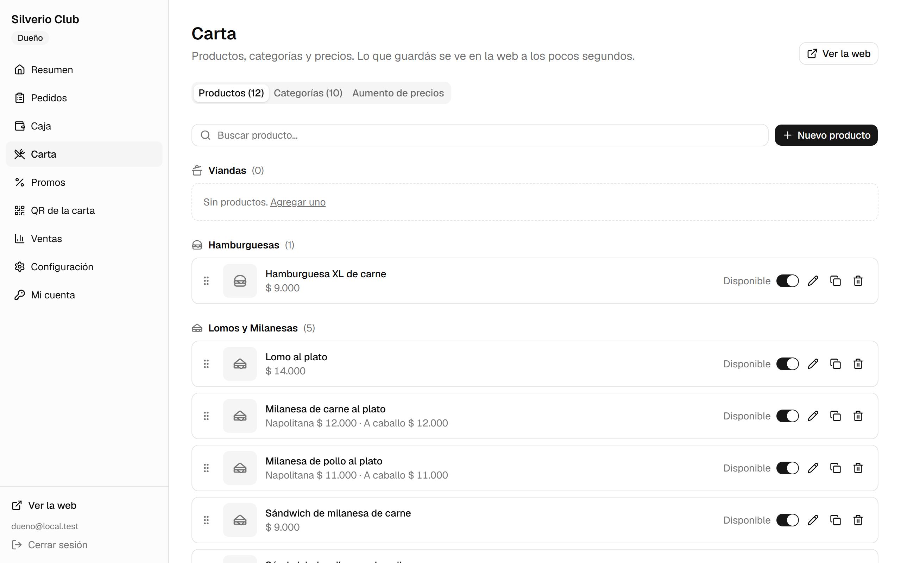
La carta en el panel.
Se terminó algo: apagá el interruptor Disponible. En la web aparece como agotado y no se puede pedir.
Cambiar el orden: arrastrá desde los puntitos de la izquierda.
Copiar un producto parecido: botón de duplicar.
Aumento de precios: en la pestaña Aumento de precios subís todo (o una categoría) en un porcentaje. Antes de aplicarlo te muestra cómo quedan los precios.
9. Editar un producto
Tocá el lápiz de un producto:
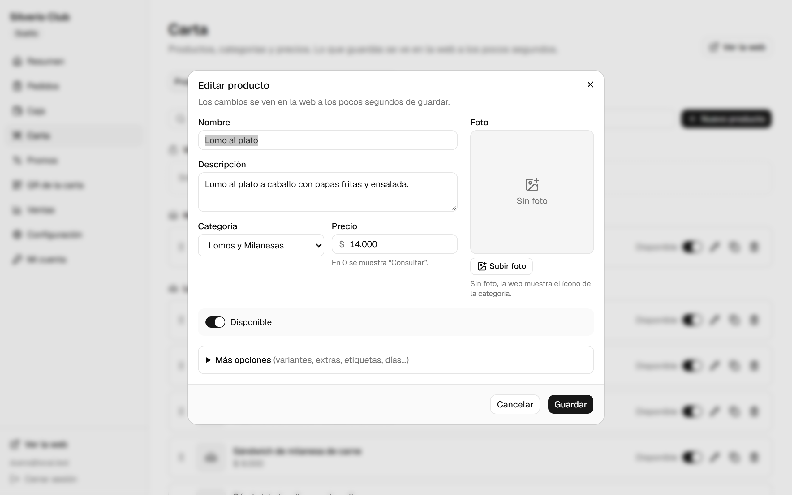
Editar producto: nombre, descripción, precio y foto.
Precio en 0: la web muestra “Consultar”.
Foto: tocá Subir foto. Se achica sola para que la web cargue rápido. Si no tiene foto, se muestra el ícono de la categoría.
Más opciones: variantes (napolitana, a caballo), extras (cheddar, huevo), etiquetas y días en que se vende.
📸 Fotos que vendenSacalas con luz natural, de cerca y con el plato ocupando casi toda la foto. Horizontales o cuadradas.
10. Promos y banner de fecha especial
En Promos cargás los combos. La primera promo activa sale destacada en la web. Cada una puede tener días y horarios (por ejemplo “Lunes a jueves de 20 a 23”).
El banner de fecha especial es una imagen grande debajo de la portada de la web, para el Día del Padre, un partido o un aniversario:
Subí una imagen para computadora (horizontal) y otra para celular (vertical).
Escribí qué dice el banner.
Elegí desde qué día y hasta qué día se muestra, y prendelo. Se apaga solo al terminar la fecha.
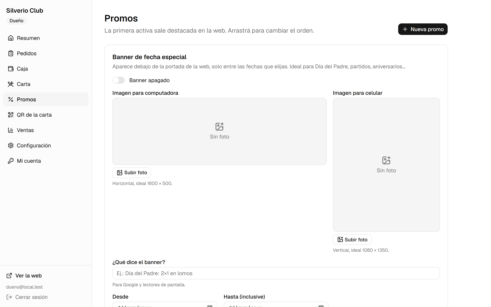
Banner de fecha especial y promos.
11. QR de la carta
El QR lleva a la web del local, con la carta y los pedidos. Para las mesas, la vidriera o el mostrador:
Descargar PNG: para mandarlo o subirlo a redes.
Imprimir o guardar PDF: 1 grande (para la vidriera) o 4 por hoja (para las mesas).
Antes de imprimirEscanealo con tu celular y fijate que abra la web correcta. Si cambia el dominio del local, hay que imprimirlo de nuevo.
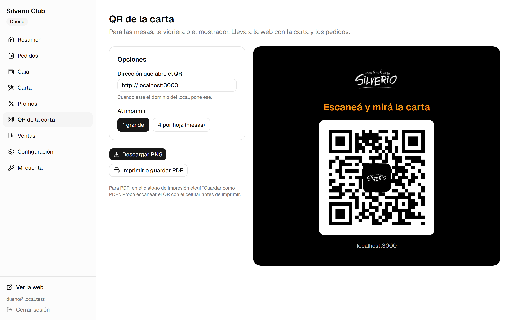
Generador del QR con el logo del local.
12. Configuración
Solo la ve el dueño. Tiene lo que puede cambiar cada tanto:
Contacto y redes: WhatsApp (con código de país y área, sin espacios), Instagram y Facebook.
Horarios: días y horas de atención. Fuera de horario la web muestra “Cerrado” y no deja pedir.
Formas de entrega: retiro en el local y delivery.
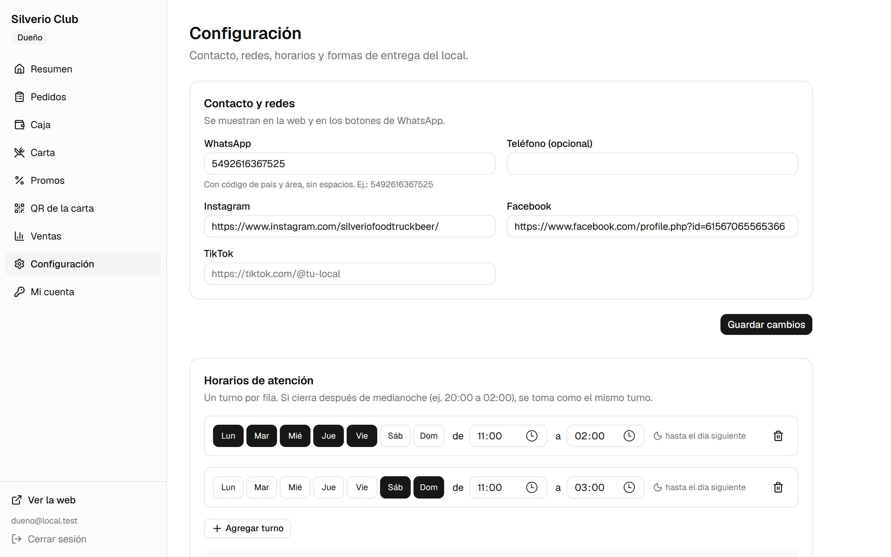
Configuración del local.
¿Querés cambiar colores, textos de la web o la dirección?Eso lo maneja DelgadoDev: escribinos y lo actualizamos.
13. Lo que ve el cliente
Así pide un cliente desde su celular:
Mira la carta y toca + en lo que quiere.
Abre Ver pedido, pone su nombre y su WhatsApp, elige cómo lo quiere y cómo paga.
Toca Confirmar pedido y recibe el número de pedido.
Con Seguir mi pedido ve en vivo cuando lo aceptás, cuando está listo y si ya figura como pagado.
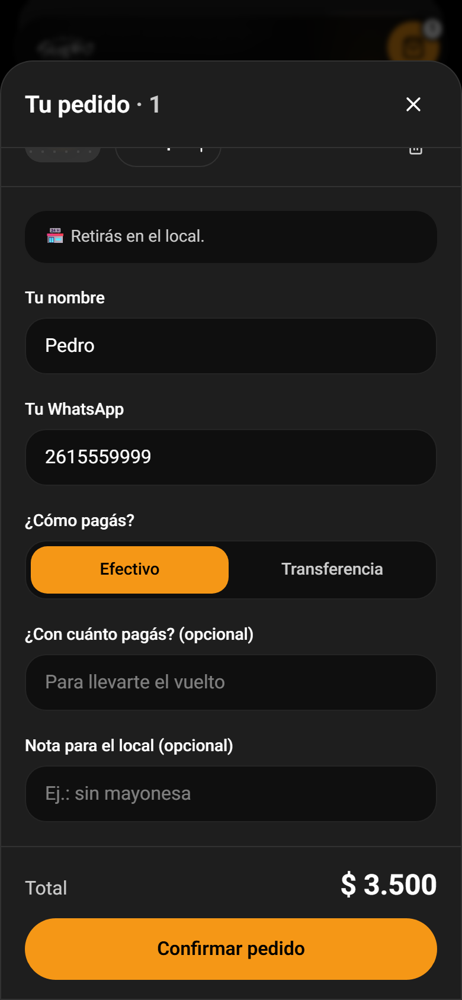
El carrito.
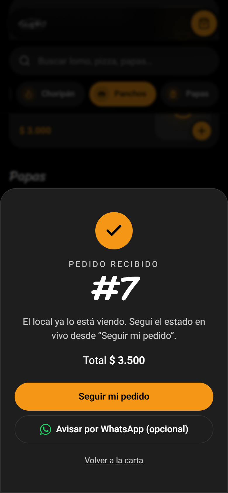
Pedido recibido.
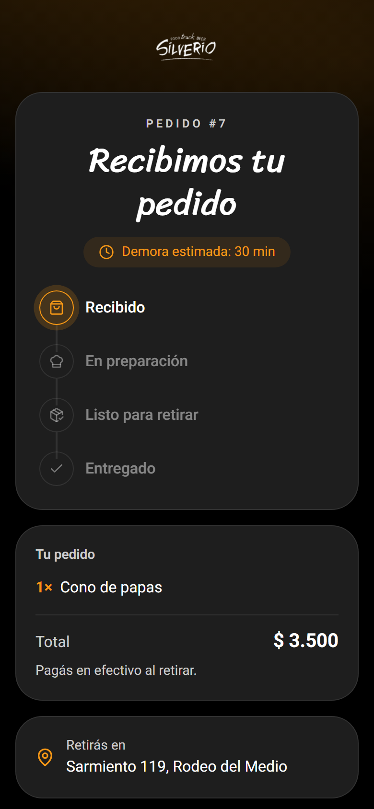
Seguimiento en vivo.
14. Problemas comunes
Qué pasa
Qué hacer
No suena cuando entra un pedido
Tocá Activar sonido de pedidos cada vez que abrís el panel. Revisá que el volumen de la compu o la tablet esté alto.
Cambié un precio y la web no lo muestra
Esperá unos segundos y recargá la web. Si sigue igual, avisá a soporte.
Un cliente dice que no puede pedir
Fijate que el local esté dentro del horario (Configuración → Horarios) y que los productos estén disponibles.
Marqué un cobro por error
Tocá Deshacer en el aviso de abajo o, en el detalle del pedido, Deshacer cobro.
Me bloqueó la entrada
Esperá 10 minutos o tocá Recuperar contraseña.
Se cortó internet
El panel sigue mostrando lo último. Cuando vuelve la conexión, se actualiza solo.
La caja no da
Revisá si falta anotar algún movimiento (pago a proveedor, retiro) o si quedó algún pedido “Entregado sin cobrar”.
¿Necesitás ayuda?Escribile a DelgadoDev por WhatsApp contando qué estabas haciendo y, si podés, mandá una captura de pantalla.